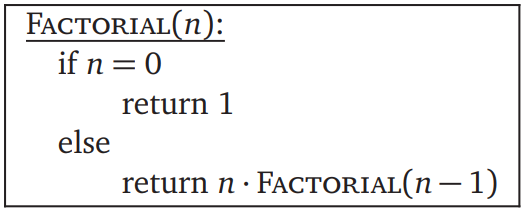

Aquí se encuentran algoritmos que pueden completar una tarea de forma recursiva o iterativa. En ciertas ocasiones una solución es mejor que otra, a veces son iguales. Lo importante es identificar el método que mejor sirve para un problema.
Recursivo |
Iterativo |
|---|---|
Descripción del algoritmoEste algoritmo encuentra el factorial de un número n de forma recursiva. PseudocódigoFragmento de (Erickson, 2019), algoritmo similar a visto en clase (Rubio, 2020). Fuente bibliográficaErickson, J. (2019). Algorithms (p.57). http://algorithms.wtf Rubio, Christian. "Metodo maestro y algoritmos recursivos." Analisis de algoritmos, 13 Oct. 2020. Universidad Nacional Autónoma de México. Clase. ImplementaciónRealizada en Javascript Entrada:El valor \( n \) de la operacion \( n! \) n =Salida: Resultado de \( n! \). Y tiempo de ejecucion del algoritmo, sin contar llamadas u operaciones extras en JavaScript. \( n!= \) |
hi |